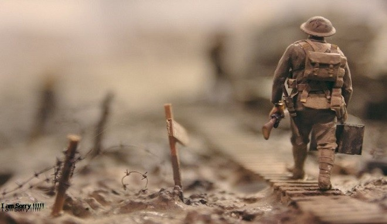
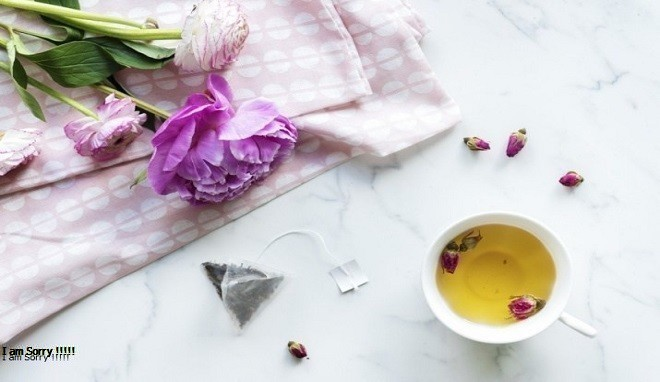

Read More »
Salamah bin al-Akwa’ Prajurit Infanteri Terbaik
Salamah bin al-Akwa’ bukanlah seorang sahabat yang masyhur. Banyak orang tak mengenalnya. Padahal dia adalah sahabat yang mulia......
Read More »

Read More »
Apakah Mariyah al-Qibthiyah Istri Nabi?
Mariyah binti Syam’un al-Qibthiyah adalah seorang wanita yang berasal dari Mesir. Pada tahun 7 H, Raja Iskandariyah (Mesir)...
Read More »